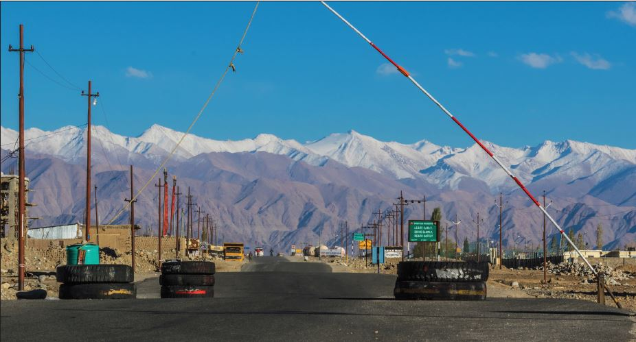

India and China Must Reduce Friction Points to Avoid Accidental War
Introduction
Negotiations can be favourably concluded when there are leverages to bargain. When China insisted sector by sector disengagement, it was clear that China want India to give up tactically advantageous positions along the south bank of PangongTso especially Kailash Range that was occupied by the Indian Army in a swift move. China disengaged and retreated from North and South Bank of PangongTso because occupation of Kailash Range was a leverage with India. It may be premature to suggest that China may not disengage from Hot Spring, Gogra, Depsang and Demchowk, but the indications so far suggest that China may retain some of the critical areas as leverage with them including Depsang and few more areas. It may be difficult for India to compel China to retreat to pre-April 2020 positions in all areas in the absence of any worthwhile leverage. Major General Ashok Mehta says, “Clearly, the Chinese have brushed aside the demand for the restoration of status quo ante. In fact the Chinese have never used the terminology of restoring status quo ante, but instead used restoring peace and tranquillity in border areas.” Though neither the government nor the Army has stated that China has declined to discuss withdrawal of forces from other areas of ingress, but in the absence of any leverage it will be Dreamstime difficult to compel PLA to retreat and maintain status quo ante along the LAC in Eastern Ladakh. If India gives in Eastern Ladakh, China will attempt similar salami slicing in other sectors as well. During Sumdorong Chu and Doklam standoff China had realised that modern day Indian Army cannot be pushed back by force and there will be strong reaction. Thus standing firm is the need of the hour.
Where is the LAC?
General HS Panag the former Army Commander, Northern Command is of the view that China has already reached 1959 claim line in Eastern Ladakh and any disengagement that may take place will be though “good for the long term peace” but in ultimate analysis it may lead to creation of buffer zone that may be entirely encompassing within India’s claim line. This raises one pertinent question, where is the Line of Actual Control (LAC)? Has it been defined or it is based on the differing perceptions of People’s Liberation Army (PLA) and the Indian Army or delineated on ground by foreign ministries of both countries? Claude Arpi, an authority on Sino-India-Tibet studies questions, “Where is the Line that Zhou Enlai mentioned on 7 November 1959 to Nehru? Is there a map?” As per Claude Arpi, India entered into two major agreements with China, Maintenance of Peace and Tranquillity along the LAC in September 1993 and Confidences Building Measures in the Military Field along the LAC in November 1996. Ironically these agreements were signed without attaching maps of the LAC. What is mutually agreed line that will not be trespassed by the Indian Army and PLA? It raises another important question what is to be defended by the troops deployed on ground when LAC is ambiguous? The predicament is that when it is left to the good judgement of troops on ground, friction is bound to take place.
Brief Overview behind Friction Between PLA and the Indian Army
The strategic objectives of both nations are diagrammatically opposite; China may be endeavouring to retain critical areas up to so called 1959 claim line which is ambiguous and undefined on the ground. Interestingly there are no maps that can indicate the claim line of China at least of Western Sector known as Eastern Ladakh. China was comfortable with “defensive crouch” of India till General Sundarji adopted forward posture post exercise Chequered board. This exercise was conducted in the high altitude areas of Northeast region in the midst of the Sumdorong Chu standoff. This was a turning point and the Indian Army started taking control of its territory along the LAC. Forward posture transformed Indian Army from “defensive crouch” to “defensive leap”. General Sundarji in spite of political pressure to resolve the issue diplomatically refused to bow down. General Sundarji had categorically told the Prime Minister Rajiv Gandhi that he was not opposed to the matter being settled diplomatically, but he was firm that it is not 1962 and he would “teach the Chinese side a lesson and a fitting reply if needed without even thinking for a second”.
India’s forward posture was a well thought out strategy and it had three distinct phases. In phase one Indian Army patrols started moving forward to dominate own areas up to the LAC. Once dominance by patrolling activity was established over own territory along the LAC, in second phase defences were prepared in close proximity to the LAC. In phase three push for development of infrastructure took place to link critical areas with communication arteries. The strategy to dominate forward areas was viewed by China as a threat to its control over 1959 ambiguous and floating claim line. Development of communication and infrastructure picked up pace only post 2000 that made China sit up and take note of India’s assertion over their claim line. In all probability development of defences and infrastructure made Chinese apprehensive of the intent of the Indian Army. Without firing a shot, the Indian Army in a systematic manner reclaimed own territory post 1986-87 and that is seen by China as a threat especially to Aksai Chin area in Eastern Ladakh.
What Should be India’s Intent and Strategy?
India does not want to grab territory unlike China but want firm control of own territory. While doing so, India is keen to reduce friction points (without appeasement) to avoid accidental war. In certain areas where China is pushing hard, India want the damage to be minimal and ground position to be restored to pre-April 2020 positions. In areas such as Depsang India will be fine if it can patrol areas along RakiNala and patrolling points 10 to 13 as was being done hither to fore.
The issue is that war can be avoided only if you are war ready. Preparation for war does not mean only building forces and logistics but also building communication and infrastructure adequate enough to apply force in an acceptable time frame. Infrastructure development along the Northern frontiers is imperative for speedy deployment of forces to dissuade China from taking any military adventurism. Agile and war ready forces can act as recessed deterrence to prevent war.
In addition, government needs to resolve the issue of dual control of LAC. At present border management is with Ministry of Home Affairs (MHA) and ITBP is responsible for peace time border management on ground. But when there is no peace and no war scenario, there should be no ambiguity in command and control; therefore, responsibility and accountability must rest with one ministry and one organisation. During this entire standoff in Eastern Ladakh, MHA and ITBP were invisible and conspicuous by absence and thus raises question what is MHA and ITBP doing in a disputed border with little capabilities to influence ground situation? It may be a good idea to place settled borders with ITBP but it is detrimental to the national security to let MHA handle unsettled borders with no expertise or no capabilities to deal with the standoffs or ingress.
China may be willing to reduce border tension by proposing moratorium on patrolling and creation of buffer zone to avoid standoffs between the opposing forces. But this buffer zone should not be restricted to Indian claim line only. Therefore, India must insist either patrolling should be done up to the perceived claim lines or moratorium on patrolling should be done up to claim line of both countries. Similarly, buffer zone too should be between own and Chinese claim line. That will force China to at least commit on ground their perception of LAC. Moratorium on patrolling and creation of buffer zone must be marked on map signed by military commanders of both countries to avoid misrepresentation of facts on ground by PLA and the Indian Army.
Conclusion
British Prime Minister Mr Chamberlain, after signing a non-aggression treaty with Hitler in 1938, had said, “I believe it is peace for our time.” A year later Hitler invaded Czechoslovakia and Poland by throwing the treaty to the dustbin. On the hind-side only gain British Government had from this agreement was that British military got some time to prepare for the war. India must look at this disengagement as a pause for a long haul and prepare for the hot summer ahead.
Claude Arpi said that, “MEA has often been the weak ‘diplomatic’ link.” He further says that, “The ‘original sin’ of the present situation on the Indian border is due to this particular weakness of MEA”. It is a good sign that Modi Government is willing to correct the past mistakes by not allowing South Block to adopt soft and appeasement policy against China. Military to military talks is a sign of no appeasement policy and disengagement should take place on equal footing without compromise. Most important issue is that India should not surrender any advantage during negotiations. While military should be prepared for a long haul in the summer but negotiations must focus to reduce friction points. China is not in a hurry to retreat and may like to witness Indian Army’s response in the coming summer months. Thus in my assessment Indian Army will have to stand firm in other areas as well.
1. Ashok K Mehta, LAC withdrawal plan gives China the edge, The Tribune, February 17, 2021.
2. India has 'given in' to China's 1959 claim on LAC: Lt Gen HS Panag (Retd), The Economic Times, February 11, 2021.
3. Claude Arpi, South Block’s Mistakes will now be Corrected by Army, The Daily Guardian, October 15, 2020
4. Nayanima Basu and Srijan Shukla, Sumdorong Chu, Ladakh-like India-China face-off which took 9 yrs to end but without violence, The Print, June 30, 2020.
5. Christopher Klein, Chamberlain Declares “Peace for Our Time, History, September 30, 2013.
6. Arpi, N 2.
